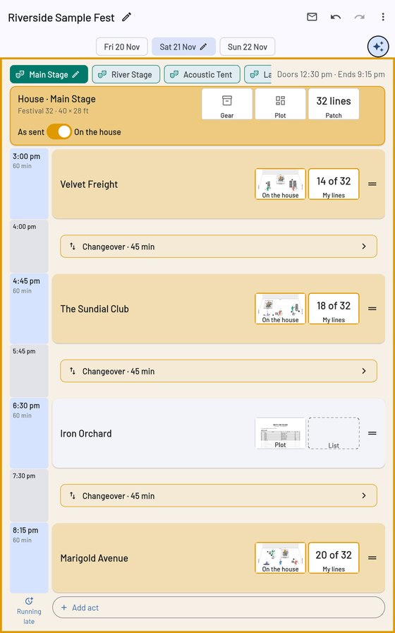
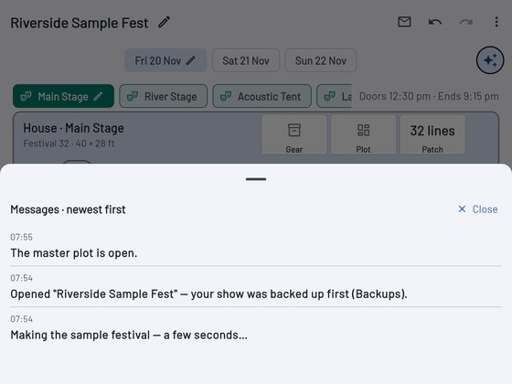

Getting started
PatchWork Live runs a show from the engineer's side — the running order, the changeovers and the crew on the night — with the house patch, the gear and the bands' stage plots feeding it.
Install
PatchWork Live is for an Android tablet (10" is best). The co-worker test build comes as a file: open it on the tablet and allow installs from your browser or Files app when Android asks. The crew app, 2ndRodeo, goes on phones. There is also a Windows version for desk work.
The sample festival
The quickest way in: Help → Open the sample festival (or open Riverside Sample Fest.zip with ⋮ → Show → Shows… → Other file…). It's made up — three days, four stages, fifteen crew, fake bands with real-looking plots and riders. Your own show is backed up first, so try anything.
The Start here card (bottom left) is a short list to tick through; fold it with − when it's in the way.
Two ways to hold the tablet
Upright — the Show page. Sideways — the stage plot of the act you picked, drawn to scale (see Stage plots).
Upright: the Show page

Upright there is one page, Show. The show's name is top left, the days are centred, and the stage chips sit in teal directly under the days, with the Doors / Ends time at the right end of the same line.
Next is the House row, which stays put while the schedule scrolls: House · Main Stage, the patch's name and the stage size, one switch — As sent / On the house — and three small windows, Gear, Plot and Patch. Each opens the House window: the house's Gear list, its master plot or its master patch, filling the page (see Master patch).
Under it is the running order. Each band's row has two small windows of its own, Plot and List; with the House switch on the page turns amber and they show the band on the house (see The Show page).
The round AI button at the end of the days line reads every band that has no plot yet. Advance (what's missing) and Past bands are in Options, the ⋮ at the top right.
Undo / Redo in the top bar work across everything — the patch, the show, the house plot's moves and a band's. The pencil beside the show's name has Add day, Add stage and Rename show.
Messages — the envelope beside Undo (and a Messages row at the top of Options) lists everything the app has told you since you opened it, newest first, with the time, the band it was about and the detail under it: what was kept, what was dropped, what could not be matched. A yellow number on the envelope counts the ones you have not opened yet; opening the list clears it. Nothing pops up over your buttons. Only a line with a button of its own (Go Pro, Undo their change, Undo delete) or a save that failed still shows on screen. The list is cleared when the app closes, and it has no Undo of its own — use the top bar's.

The ⋮ at the top right is Options, for the whole app: Settings, Messages, Show (new, Shows…, save, cloud, print, Advance, Past bands), Plot, Export, Stage and Help. Help → Start here brings the quick-start card back.
Monitors & RF, Crew, Backline and Network are switched off for now; this manual still describes them.
Several stages
The stage chips under the days pick the stage on show — pick River Stage and the House row, its gear list, plot and patch, and the running order are River Stage's. Working one stage all day? Hold its chip → Pin this stage: the show stays there and the other stages hide. Unpin beside the chip brings them back.